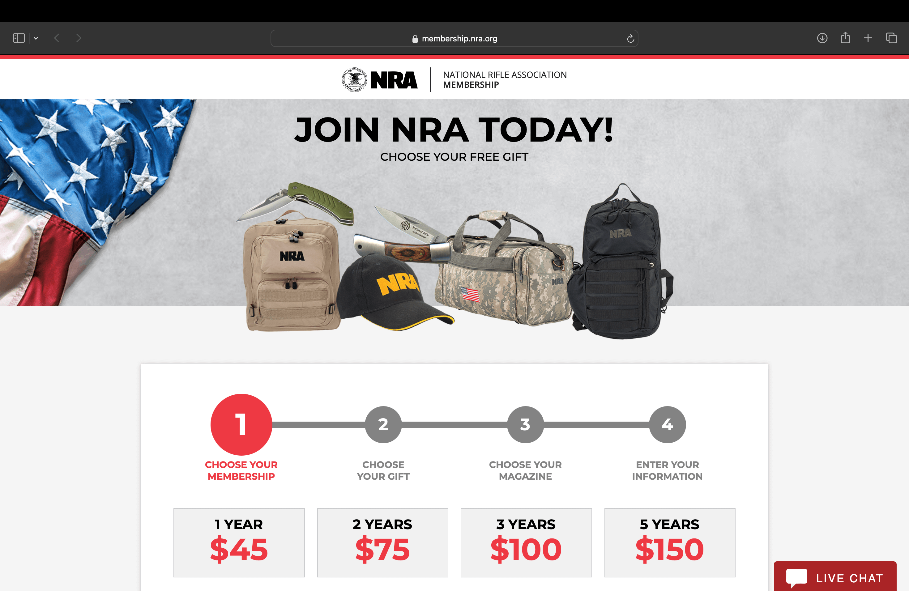
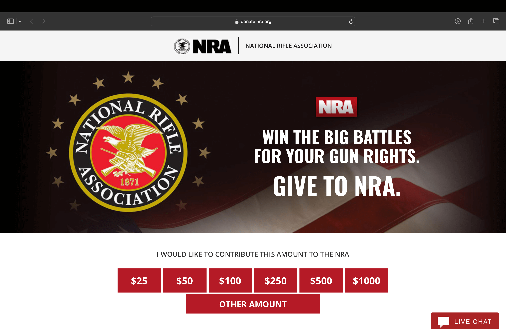
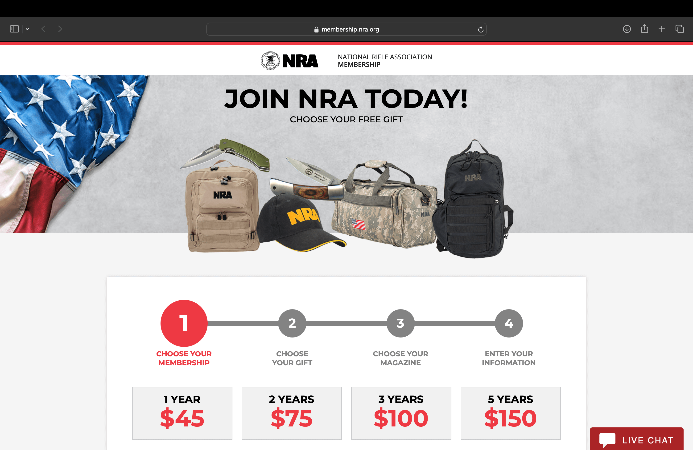
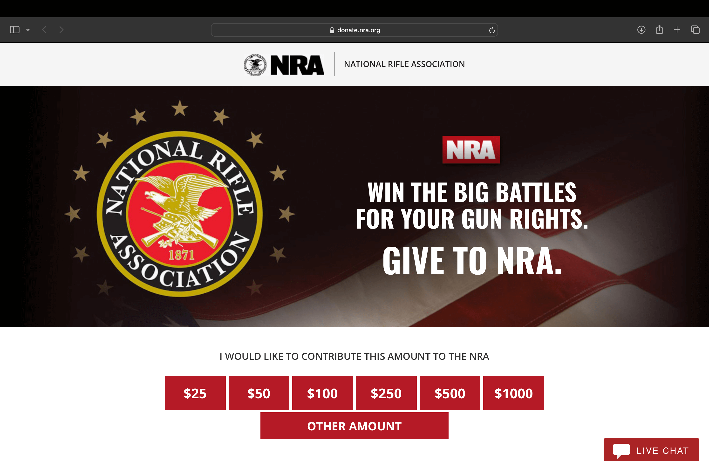

My main inspiration for this website is the official site of the NRA. I want to make my parody as similar as possible. The content I'll create will be influenced directly by the content present on the NRA's website. I also intend to copy the navigation and interactivity directly. My style guide has been predetermined by the NRA's Styleguide. I will use Proxima Nova in ExtraBold, Medium, and Thin at sizes 96, 32, 24, and 20. All of my headers and navigation will be ALL CAPS. My colour palette will be limited to black, white, red and grey. The photos I use will be excessively American and all other imagery will be vectorized versions of the NRA's official logos and iconography.
 


